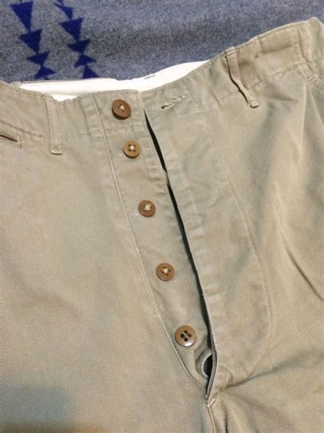
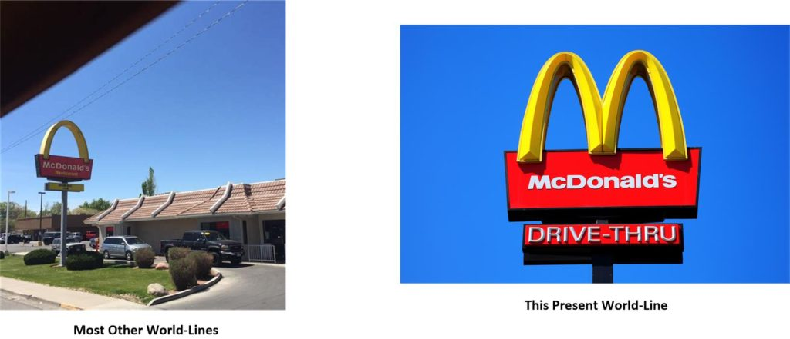
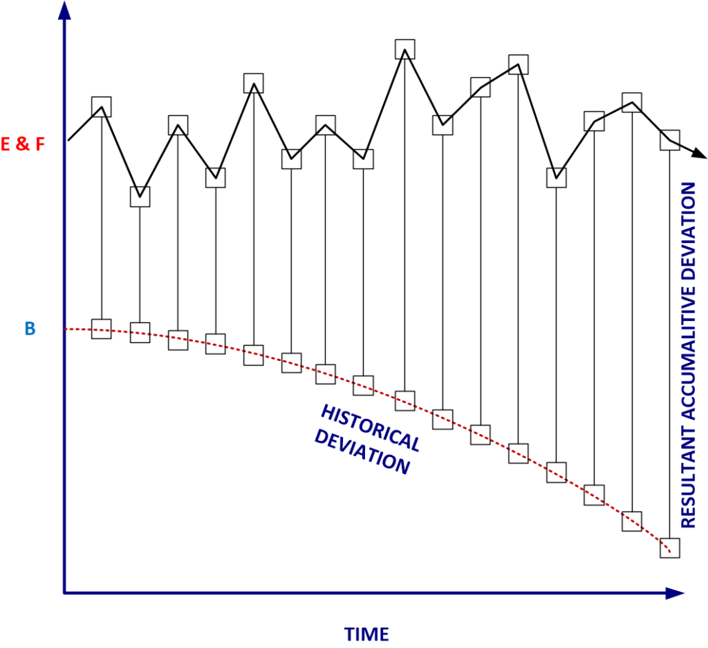

In this post, I describe some of my experiences or “adventures” in world-line travel. As I have stated previously, many of the world-line slides that I cycled through were fairly bland. The changes were for the most part insignificant. Each one looked nearly identical to the one before it.
Oh, sure I was provided with some extreme examples when I was first being trained, but in operations it was hardly the same. This post describes some of the world-lines that I visited and how they differ from this current one. Here are some of the more interesting or noteworthy world-lines.
The reader must keep in mind that I had no control over my destination world-line. That was controlled by the “pilot” who manipulated the artifice which interfaced with my ELF probes and EBP. I might be considered the “commander”, but for the most part, I was just a frazzled traveler.
Let’s start off describing an odd world-line.
The Spicy World-Line
Back in the early 1990’s I spent almost a week (which was a long time – most switches occurred hours apart, or days at the most) on a world-line that enjoyed spicy food. Imagine my surprise when my wife added hot chili peppers to my bowl of Cheerios! Not sugar. No. Dried red hot chilies were sprinkled on it, instead of sugar, and then warm milk was poured over it. Everything on that world-line was spicy. Everything.
That included “spicy coke”, the red colored can of “Blistering coke plus”, and “Pepsi hot”. There were also cans of “Inferno”, and hot and spicy chewing gum. You could also get a magma milkshake.
Aside from that difference, the world-line was very similar to my initial departure world-line. I know that it sounds very dull, uninteresting, and boring, but that was the way it was. I never made aggressive slides to wildly divergent world-lines outside of my training.
I do not know why this world-line was so important, nor do I understand what the significance was for eating spicy food.
Luckily, for some reason, my stomach was able to handle all the spicy food. Which makes me really wonder about world-line travel. How can my mind and memories are that of another world-line, when my physical self has totally adapted to the new world-line. The only way that I can reconcile this fact, is that the consciousness, and memories reside above and apart of a given world-line. Yet the physical body is part of a given world-line.
This would also explain why sometimes I would have a tattoo, or a scar, or (even) nail-polish on my fingernails, and have no memories associated with the changes. My memories resided outside of the physical body. When I gallivanted back and forth and in and out of the different world-lines, I was stuck with my old memories.
It’s sort of like the movie “Hot Tub Time Machine”, where (at the end of the movie) they left the hot tub and found that they had new houses, new wives, and new lives that they had no recall of.
Other than that issue about spicy food items, the world-line was very similar to all the others. There were no “extra characters” that messed up with my spelling ability like the “rune” world-line. Or the “sickly world-line” where everyone was suffering (and I do mean suffering) with some kind of very terrible illness.
Speaking of which…
The Sick World Line
I once traveled on a world-line that scared the living heck out of me. It was in the early 1990-s. Maybe 1992. And early October. Leaves were turning and it was a very beautiful time of the year with crisp blue skies.
Luckily it was only for a few hours. I was at work, and I cycled into a new world line as I often did in the past. When I got up from my desk to go and get a Dr. Pepper, I noticed that everyone looked very sick.
I mean everyone.
Everyone was coughing. Some were even coughing up blood in tissues. They were all terribly sick and many just sat at their desk or collapsed in the chair. It looked like they were exhausted and taking a nap.
I too was beginning to get sick…
..but it wasn’t so bad. It was just a shallow dry cough. I had a slight headache and a fever, as did just about everyone else. The only thing about this, and the reason why I was so fearful, was that my chest felt like it was full of cement. It felt “solid”, if that makes any sense to you all. I couldn’t take in air, and everything was an exertion.
I never understood why everyone was so sick, or the conditions for it on that world-line.
I tried to listen to the radio at lunch, but no one was saying anything about sickness or an outbreak. Which was really odd, as it seemed to me that the entire city was sickly and dying off. Instead the news was all about some basketball player who died in an airplane accident. They were also going on and on about how “there were no masks” which was pretty silly. After all, not having masks during the Halloween season is really a “tempest in a teacup”.
Anyways, I will tell you that I was starting to really panic. I couldn’t get much air in my chest at all, and I was afraid that I wasn’t going to survive the world line.
I do remember Rush Limbaugh (Yes, he was on that world-line) talking about the up-coming war with the “Chi-Coms”, and that their military was no match for ours. He kept on referring to them as “bat soup slurping Chi-Coms”. That we would just be able to walk all over them, and they wouldn’t have a fighting chance. Whether this sickness was a consequence of the bellicose nature of the Neocons in the United States, or a preemptive WMD attack by China, on that world-line, I never found out.
I was only on that world-line for maybe four or five hours.
The entire time started about 10:00 in the morning, and went through lunch, and ended before the end of my work day. Everyone in the company was sick and (I think) dying. The factory floor was deserted, with just a handful of people resting in the break rooms.
At lunch, I drove to eat some fast food.
There wasn’t much going on. Though this world line didn’t have the “city chicken” special that I had grown fond of. They did however have this option called “super-sizing” where you could make everything bigger (soda and fries) for only a dollar more. Which was pretty cool, except that my wallet wasn’t full of money. I had a “married mans wallet”. Just a few dollars, and moths that flew out when you opened it (LOL – joke).
The streets were deserted, and McDonald’s was in the process of closing.
It was really odd, and completely out of sorts with what you would expect a CDC-level medical emergency to be like. No one was covered with sores, though when I looked at people my “minds eye” would conjure up images of smallpox victims.
People looked… well normal and ordinary. Everyone seemed fine, aside from being sickly and very tired.
That’s it, don’t you know.
Our images of what to expect are colored by history, our own experiences, and the thoughts of others. In my mind, I felt that this was a bioweapon event. Though, even though that is what it felt like, it was not what it appeared to be. It just seemed like a rather quiet time where the few people who were around were sick… very sick.
After all, if it was a bioweapon attack, then why wasn’t anyone talking about World War III? It just didn’t make sense to me at all. People were acting as if nothing was going on, even though (obviously) a sizable portion of the population was staying home and not going outside.
What I took from that entire experience is that there is a big difference between talking about war, and living through it.
Heed my advice.
The World-line without Zippers
Most world-lines looked like every other one. When you slide, you just cannot notice any difference. Once, I did a slide and everything looked the same. No big deal. As always, I just continued to do my work. My work assignments were the same, and my friends were the same and my wife was the same. My pets were the same. However, I did notice something different when I went to the bathroom to take a pee.

My trousers did not have a zipper. Instead of a zipper were buttons. That’s correct. There were three buttons that I had to undo to go and pee. I don’t know if I liked having a button front, or a zipper front. I think a zipper front is much more convenient, but there was something clean and simple about having buttons…
Maybe it’s a good idea. But, I’ll tell you what, I have yet to encounter trousers with buttons in my present (semi-fixed) world-line.
The Plastic Surgery World-line
Most of the world-line slides occurred within hours or days. This period of time, a mere few hours, is not long enough to determine what the differences are in a new world-line. That is because, and I remind the reader, that most of my world-line slides were very similar to the previous world-line. This was by intention and was necessary for a host of reasons.
I well remember that I once went into a new world-line that looked identical to the previous one. However there was one noticeable difference that I well recall. It was so odd that I will never forget it.
There was an advertisement for a plastic surgery hospital. On the billboard was an attractive woman who was cradling her tummy as she was obviously nine months pregnant. The words in the advertisement went something like this; “ Let Doctor XXXXXX sculpt your body for the expectant mother look.” WTF?
In that world-line you could have plastic surgery that would make you look like you were nine months pregnant. Talk about doing a “double take”!
Most Other World-lines
Most of the other world-lines, including my original world-line had certain features that differ from the world-line that I currently occupy. I wouldn’t go as far as these differences are significant, but they are noticeable.
This refers to world-lines that I visited. Not which exists. For I do not know of the sum totality of everything. I only know what I was exposed to. This is a very important distinction.
Perhaps the first thing that I would say is the most noticeable is that McDonald’s is different. That’s true. On this current world-line McDonald’s has this “golden arch” symbol that looks like an “M”. But on most of the other world lines, the McDonald’s aren’t so obviously “corporate” and maintain a “twin rainbow” arch design.

Most other world-lines also use better English than this current one does. I think that the reason is because on other world-lines they still (for the most part) maintain a more traditional education system where Latin and Greek are still taught.
Yes, the globalist push for diversity of race over cultural adaptation is present in most all of the other world-lines; however none were so advanced in achieving it as in this world-line. Of, course that is only based on what I have been exposed to.
Most other world-lines have merit based (American) welfare programs, and speak English. California is also known as the “outlier” in most other world-lines, and yes, most other world-lines do refer to the 9th Circuit Court as the “9th Circus court”. (Thank Bill Clinton for that. He was the successful architect of that.)
Yet, this world-line is nearly unique (compared to the bulk of the others that I visited) in a number of areas. For instance, on most other world-lines that I have visited, the American roads are paved in cement and not asphalt. Here it is the other way around. Toll booths, roadside rest areas, and picnic tables seem to be stable elements across all the world-lines that I have ventured into.
Not too many changes there.
Campbell’s Soups are just as popular on other world-lines, but here the most popular soups are tomato and chicken noodle, but on other world lines it is more evenly spread out. If you look at the store shelves, instead of having tomato and chicken noodle cans you are just as likely to find vegetable and beef-rice soups.
Pit Bulls aren’t so popular on other world-lines as they apparently are here. Poodles and Collies seem to be.
Cats are cats, and are everywhere. Though, many of them have wings (no kidding!) It’s an evolutionary item that isn’t that predominant on this world line. It is a fur covered flap of skin that the cats have. Not every cat has this, but a goodly percentage does. Maybe as much as 60% on some world-lines.
Some of my cats would be death from above to the birds pecking at the ground below.
Things that would and wouldn’t change
For the most part, my wife and pets pretty much stayed the same. After a slide, my “new” wife would be nearly identical to my “previous slide” wife. Of course, my wife did not participate in any slides, so her memories were always those associated with the world-line she inhabited.
In some world-lines my wife would be heavier, while in others she might be thinner. Hair styles, dress and behaviors always were a function of the given world-line.
You might think that it might be cool to have a different wife with each world-line slide. Well, that didn’t happen. I think that if it did, the mere fact of that would end up altering my personality, thus rendering me useless for my mission parameters. I, and I think most men, need a degree of stability in their life. The women in their life prove this, and it is a core important need.
My cats were different. They seemed to totally be aware of me sliding in and out of world-lines. Don’t ask me why I have that impression. I don’t think that I can vocalize the reasons accurately except to say that their soul is a matrix soul. Which imparts a kind of multi-dimensional understanding with it.
My dogs also seemed to be aware of the world-line slides. However, they behaved differently. When I would first enter a new world-line they would come up to me timidly and quizzing. Then after a few hours, all would be fine. Only once or twice would my dog stand up, stare at me, and start barking on my world-line arrival.
Some Thoughts
Seriously, if the reader were to use my probes, they would be rather surprised on how little the world-lines change when you slide in and out of them. Trees are still awesome. People fish, hunt, and have pets. Some of which are unusual.
The news is still obnoxious and is still trying to influence how you think.
People engage in vices, and the government tries to limit it so that they can (personally) obtain secondary sources (also known as a “cut”) of others income. People fight and squabble. There are rabble, riff-raff, and intelligentsia who think that they are better than everyone else (but are actually just people who are trapped in their own neuroses oblivious to the rest of the world).
Major personalities seem to exist in other world-lines. That includes John Wayne, Arnold Schwarzenegger, Hugh Hefner and Donald Trump.
Extreme USA
Let’s talk a little bit about some of the world-line slides that I was involved in during the 1990’s. That was a crazy decade (from my point of view) for certain.
Early on, before the year 2000, the <redacted> “pilot” was cycling the slides rapidly (for some reason, that I assumed had some real significance) and with large swings in deviance. I guess that the time period in question was the primary reason for my “mission”.
Thus, where I would “normally” slide in and out of world-lines of maybe 1% to perhaps 5%, the slides were going much “further out” than that.
The reader might have this idea that I would be exposed to purple colored watermelons, or two moons in the sky. Nope, my experiences were not that extreme. In fact, all of the variances had (or possessed) a common point of origin or common history.
However, this was significantly different. For now, in these great deviance’s, the “past” histories were now significantly altered. As such, the observed (manifested) changes were primarily due to significant changes in past histories.
The movement started to engage in changes that derived from changing “past” events as opposed to changing “current” events. For instance, a 2% deviation might have a new world-line where the apple on my kitchen table was now a banana.
A 4% deviation might have us sitting on the floor Japanese or Korean style.
These deviance’s represent a change in “current” reality attributes.
However, what was happening was that there was a new attribute incorporated in the changes. This was an added component of reality attribute changes as a function of prior history.
It would be a 2% deviance and an additional 3% deviance of attribute “K”.
MWI switching involved a large number of variables. I was trained in the manual manipulation of seven of them. However, I know that there are many, many more.
Typically, the “pilot” would implement these slides to fit the requirements that they felt necessary. I just “rode” the slides as they materialized. Sometimes it was just frazzling, but mostly it wasn’t really too bad.
Control of the World-Line Drivers
There is a method towards the control and specification of the coordinates of a new world-line. In the 5th dimensional egress portal mechanism, that was a 5th dimensional system. As far as I understand it is based on coordinates relative to the point of egress.
In other words…
Enter portal at 0,0,0,0,0,0,0. Arrival at coordinates 12,-4,2,0,6,8,-9
However, I was not involved in fifth dimensional portal egress. I was involved in seventh dimensional slides.
The core kit #2 ELF probes interacted with the EBP to enable seventh dimensional egress. This was a much more involved system, with coordinates substantially different from the portal egress methodology. The <redacted> “pilot” did not use numbers for coordinates. It utilized a series of circular symbols to configure the coordinates. And, I haven’t a clue as to how to operate them.
What I do know, however, is that once the coordinates were established, I could always take a look at where I was. As I did have access to the resultant “map” through the ELF core kit #2 probes. However, it was never a very useful or rewarding effort as the location map looked a little something like this;
Only it was overlaid with similar versions, all seemingly transparent to some degree more or less.
Deep Dive
For a while in the early 1990’s, I went through a significant series of slides that I refer to (personally) as the “Deep Dive”.
However, this time the resultant changes were significant. Utilization of this additional element of deviation resulted in significant changes in realities. I was able to slide in and out of equally strange world lines. (Although none of them were as drastic as a change in weather, language or culture like I experienced early on in China Lake.)
That’s the way many of the world-line changes were.
I had no idea what the differences were, and my time on the world-line was often of such a short duration that I never could really investigate what the causes of the changes were. Sometimes however, I could “pin point” a direct cause or event that seemed to be a major mitigating factor.
The Dive Itself
A series of strange divergences started to take place. Each one took place (approximately) on my same world-line but with drastically different “lead up to” histories. I started to slide into world-lines that had critical junctures altered. Each slide was more drastic in influence. Yet each slide resulted is a relatively calm and easygoing lifestyle.
The first slide took place around 1994 and apparently represented a world where “something” was altered in the 1970’s. I don’t know what was altered. But, in hindsight, the life seemed a little bit better. At least, from my point of view, I had a little more money in my wallet, and I drove a nicer car. This slide was a short one and only lasted maybe eight hours.
That was followed by a slide where the world was significantly different.
I don’t know what happened, though I do know that we did not get involved in the Vietnam War. Cuba was our long-time friend. I can only suppose that John F. Kennedy was not killed, and LBJ never became President. This world was even nicer than the previous world-line. I was doing much better, and my house reflected that fact. I know all about this because I spent over a week on this world-line.
Following this, there were a series subsequent deep slides.
Many of which I have no idea what the changes were, but they seemed to go back in time in approximately 10 to 25 year increments. Each time a major event was replaced with (nothing?) something else. The result of this was that each time, my standard of living got progressively better and better. The air was softer and sweeter.
What I mean is that I would go to a world-line where there were some significant changes 25-years in the past of that world-line.
Then, the next world-line after that would go “deeper”. I would be on a world-line where the significant changes occurred 35-years in the past of that world-line.
This was how it was like. The slides continued all year, and kept going deeper and deeper changing and reversing events that we today on this world-line consider to be fixed and immobile.
No Taxation of Americans
The funny thing about all these slides is that when you occupy a world-line that you fall in love with, and then come to something resembling this world-line you start to RESENT the changes made in the base-line world-lines.
Nothing was so obvious as to what the morons did to the United States around 1910 to 1920. Those evil, selfish, fucking selfish idiots.
Ok. Let me discuss this a little bit in detail.
There was a world-line where no one paid any taxes. Yes, the 16th amendment was never ratified. People were happier and healthier, and it was much calmer and quieter time. However, there were trade-offs. Though I do not know if the trade-offs were directly associated with the lack of taxes or other things. The thing that was most notable was that it was pretty much technologically backwards compared to the baseline.
The reader is advised NOT to assume that the passage of the 16th amendment resulted in the technology explosion that we have today. There is no correlation. I am only reporting my experiences, and that includes a world-line that is so described.
Yes, I know this because I was paid in cash and there were absolutely no deductions at all. I was paid what I was earned. I was on this world line for nearly two weeks. It was a long time. (My wife kept on saying that I “felt” really odd to her. And she wanted to know “what was going on”. What could I possibly say that wouldn’t get me thrown into a mental hospital?)
When you bought something, it was for one dollar, or a dollar and twenty five cents. Not $7.98.
I remember well, how I wanted to get a coke, at a seven-11 and there wasn’t any. (Store that is.) I had to go to the gas station and buy a coke. I opened up my wallet and the normal $30 or so that I usually kept was missing. I only had two (paper) dollars and a change purse of coins. So, I gave the kid a liberty dollar coin, and he gave me back ninety five cents! It only cost five cents for a coke in 1994! (Insane.)
The money was also different. Aside from the pennies and nickels there were two and three cent coins!
In my wallet, I had numerous bills all of which looked very, very unusual. They looked “similar to” (NOT “the same as”) this;
I stayed on that world-line for a little over two weeks. Maybe 16 days in total. It was ok, but I really missed the television shows that I was watching at the time. Oh, televisions existed, but I was (apparently) unable to afford them in that world-line.
Instead, we had a big radio that had multiple bands that sat on a table in the living room. It had a brown bakelite plastic housing. When turned on it would light up and give this kind of humming sound.
Newspapers existed, but were different. The newspaper “America Today” was in black and white instead of the colorful “USA Today”.
Before the “Deep Dive”, I would work and then go home. At home we would have a meal and watch our favorite television shows. My wife would sometimes play her electric piano. Then we would go to bed.
Not now. Before the “deep dive”, I would come home and plop myself down in front of the television set.
In this new world-line, my new reality, we didn’t watch television. We didn’t even own one! Yes, we had many conveniences in the kitchen, but the groceries were totally different. Mostly they were canned and dry goods. There were very few frozen foods.
A little van would drive up to the house and my wife would buy fresh vegetables and eggs from the man. There were supermarkets, but most of the stores were family owned. There wasn’t any malls that I recall. Yet in the mid-1990’s malls were a very popular center of the community on the baseline reality.
My wife made different kinds of meals. (Which is something that you get used to in this role.) They pretty much consisted of a meat, or fish, with two to three side vegetable dishes, and a carefully prepared dessert.
My wife did not have an electric piano. She had a flute.
Thus, for these two weeks, after work I would go home. She would get me my slippers, pipe and tobacco, fix me a whiskey sour, and I would wear my robe (still with my tie on), and I would relax reading the evening newspaper (with the desk fan on) while she would make dinner.
Dinner was in the kitchen. But the wife had a vase with flowers in it… every day.
Butter was in the form of a big rectangular cube wrapped in newspaper. We also had a funny looking butter knife that looked more like a wide and broad spatula that would be used to slather the butter onto the bread. The funny thing was that the butter was left on the table to get soft. It was not kept in the “refrigerator”.
Dinners were much more involved and elaborate. Stuffed peppers, baked ham, city chicken, broiled fish, and lamb roasts. Where before the deep dive, most of our meals consisted of “cheaper foods” such as meat loaf, spaghetti, hot dogs, and egg meals.
Then after dinner, I would sit on the porch, and she would join me after she cleaned up the table. Sometimes our neighbors would walk by the porch and we would spend an hour or so talking. It was really…really different. However, after a few days (once the shock dissipated) I found it truly charming.
As charming as they were, the changes were rather stark and disruptive compared to what I was used to.
On one hand, before the slide I was using a computer at work. Then, when the slide occurred I found myself back at a drafting table working with a manual eraser (not even an electric one). Instead of email, I had a wire basket where inter-department correspondence would be mailed out. I had an “in box” for incoming mail, and an “out box” for out bound mail.
There was a “mail boy” who would deliver the mail two or three times a day.
One world-line I would have a car, and then I would be on one where I needed to take a bus. One would have my wife happily buying presents for her family, and another world-line where she hadn’t spoken to them for years. It was extremely disturbing, and made me a little ill.
Here is an interesting aside. My first wife was always “at war” with her family. It was a terribly dysfunctional family with a long history of mental illness. Her parents had the illness and so did all of her brothers and sisters. Yet, as soon as we hit the world-line with historical influences dating prior to 1913, all the illnesses disappeared. That is correct. What was the change? I do not know. No, I do not think that her family’s illnesses were associated with the 16th amendment. But maybe, I suspect (after some consideration) that they might have been associated with World War I somehow. Is that possible? Can some physical event result in long term genetic mental illness? Or, is it just the way the world-lines operate, and the changes were coincidental? I do not know.
One world-line had a phone with push buttons, and then I would have a slide and the new world-line would have three (x3) phones on my desk, all with rotary dials.
The moment I slide back to the non-16th amendment reality world-line, all subsequent slides reflected similar attributes. For instance, all currency was no longer “Federal Reserve Notes”, but actually IOU’s good for gold or silver coins!
That’s right.
I could have taken any one of the notes to any of the banks and exchanged it for hard metal coinage. Amazing! When did all this change? I know that FDR banned all gold and stole it from my grandparents, but I never realized that the banks actually offered physical notes of paper that represented gold and silver coins. Truly amazing!
Further, the bank notes were also much more interesting and colorful.
They described events rather than people and presidents like we currently see on the bills. (Today all the bills have Presidents, with some notable exceptions.) The bills were also in much smaller denominations than what we see today. Heck, I could have probably paid my monthly rent with a five dollar silver certificate! That is how much the world had changed.
These slides continued for maybe another three weeks. I think they went back (in changes and alterations of the past), perhaps three hundred years.
When I finally “hit the end of the line”, I was living more or less like an independent land-holder with a comfortable house, a house maid, and a beautiful well-educated wife. The year was the same. It was 1995, as I recall. But the world-line was so very different.
The technology was rather primitive, and that distracted from the benefits of the life that I found myself in. Each step back in time-alteration made the present reality “better”, “calmer”, and more prosperous. The cost to this was a decrease in technology, or better yet, a change in the direction of what technology took.
The Slides
The reader might have the impression that I kept on going deeper and deeper into alternative realities. While that was, to a degree, certainly true, I would also move back to realities that wasn’t so different from the (more or less stable) apparent present. So, while I might travel to a world-line where I was using slide rules and dictating to a secretary, I would shortly have a slide to something with computers, video games, and Strawberry Coke.
I don’t know why this was the case.
Snap Back to a Continuance
Then, after a week at my (apparent) destination world-line, I was abruptly projected in one of the most amazing and harsh slides of my entire involvement. Then I found myself back in an almost identical world-line to the one that I had initially been on (prior to the great dive). I do not know why this all occurred. No one told me anything, and the drone pilot was as mute as a cinder-block wall.
It totally sucked.
To live one life in the reality with no Federal Income Tax, a peaceful nation much like Switzerland, and eating good healthy food with simpler pursuits to BLAM!… Back in the reality of the mid 1990’s with the Soviet Union, high unemployment and Democrats trying every single way they can think of to tax more and more of my money! UGH!
While there is a near infinite number of alternative world-lines possible. My role involved the manipulation of the world-lines associated for the bulk of humanity. And, the vast bulk of humanity chose this current world-line (or ones similar to it). Thus, here I am where the vast bulk of humanity wants to live.
Luckily these kinds of aggressive slides were short lived.
I really do not know WHY suddenly things had to be adjusted like they were. I only know that they were, and my personality (how I reacted to the changes) affected the “dimensional anchoring” process. For indeed, how I felt and acted upon these changes helped to steer the process to new world-lines.
Perhaps that is why my retirement ended up in a world-line where the conditions for my circumstances favor my intentions.
Theories
I have my own theories as to how the entangled <redacted> worked and how the pilot would move the world-lines. They are all probably wildly incorrect. However, if there is one thing that I can posit is that the extremity of a given world-line is a function of how the group-baseline world-lines need to be altered.
I cannot help but speculate that the extreme changes and movements representative of the world-line slides were a function of some radial trends (or contrary trends) on the baseline world-lines.

In other words, if most of the world-lines were starting to move into discordant behaviors, it would be necessary for me to move the “dimensional anchoring process” to a greater deviance level.
The greater the disruption, the resultant corrective actions are required.
MAJestic Commentary
For what ever it is worth. If you were to ask my MAJestic leadership to comment on this post, they would probably say something like this…
MAJestic has no knowledge of any of these “adventures”, experiences or attributes of the sub-program that this agent was part of. We made an agreement with an extraterrestrial partner and part of that agreement involved a connection of sorts between the agent and an extraterrestrial. How the agent experiences the connection is a personal event, and is beyond our experience. We do not condone nor disparage his statements. Unless those described experiences personally benefit the reader, the information is useless. As far as the reader is concerned, the agent was involved in a program involving a technologically advanced extraterrestrial species. His experiences in the program were unique and possibly hard to describe to any level of comfort to the reader. We permit this narrative to be disseminated with the caveat that MAJestic is disassociated with the experiences of this agent.
Conclusions
This post is in response to a question that a number of influencers asked. “What was it like to world-line travel.” This post describes some notable world-line slides. I posit my understanding on how it worked, and the reasons for the slides. I also describe what I learned.
One thing is certain. For me, I was the proverbial frog dipped in and out of hot boiling water. While the rest of humanity is on the stove being cooked alive.
Take Aways
- World-line travel is not as exciting or interesting as you would see on Hollywood movies such as “Back to the Future”, “The lathe of Heaven“, or Star Trek’s “Mirror Mirror“.
- World-line slides varied from hours to weeks in duration.
- The selection of the destination world-lines and the mission objectives involved were beyond my control.
- I had access to the destination world-line coordinates on a “map” of sorts. Unfortunately, I was unable to read the map.
- I personally learned from the different slides on a personal level. As a result I personally find that many Americans have no idea how far America has strayed from the great nation it once was.
- This post describes what it was like being in MAJestic and performing my mission parameters.
MAJestic Related Posts – Training
These are posts and articles that revolve around how I was recruited for MAJestic and my training. Also discussed is the nature of secret programs. I really do not know why the organization was kept so secret. It really wasn’t because of any kind of military concern, and the technologies were way too involved for any kind of information transfer. The only conclusion that I can come to is that we were obligated to maintain secrecy at the behalf of our extraterrestrial benefactors.


MAJestic Related Posts – Our Universe
These particular posts are concerned about the universe that we are all part of. Being entangled as I was, and involved in the crazy things that I was, I was given some insight. This insight wasn’t anything super special. Rather it offered me perception along with advantage. Here, I try to impart some of that knowledge through discussion.
Enjoy.


MAJestic Related Posts – World-Line Travel
These posts are related to “reality slides”. Other more common terms are “world-line travel”, or the MWI. What people fail to grasp is that when a person has the ability to slide into a different reality (pass into a different world-line), they are able to “touch” Heaven to some extent. Here are posts that cover this topic.


John Titor Related Posts
Another person, collectively known by the identity of “John Titor” claimed to utilize world-line (MWI egress) travel to collect artifacts from the past. He is an interesting subject to discuss. Here we have multiple posts in this regard.
They are;